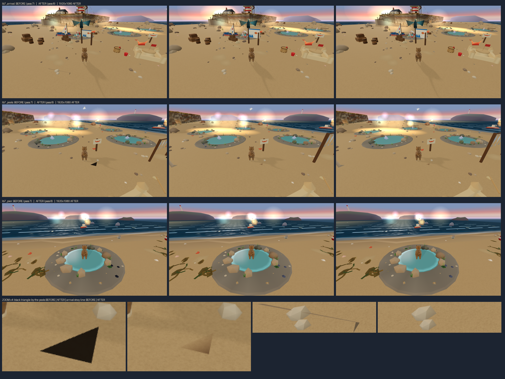

PLAY camera (tools/verify/verify-lighthouse.html, shots lb7_arrival, lb7_pools, lb7_pier, ?place=1&wx=off). Rows: arrival, tide pools, pier; columns BEFORE (pass 7) 1280x720 | AFTER 1280x720 | AFTER 1920x1080. Bottom row: zoom on the black triangle and on a stray dark line, before and after.
Root cause of the black triangle: the crab burrow, lighthousecritters.js: a half-metre triangle in the wet mesh coloured 0x1c150f (near-black in linear light) at 85 % alpha, drawn flat on the sand next to the tide pools (found by hiding wet-mesh triangles one at a time). Now a 0.3 m damp-brown mark, 60 % at one corner and 12 % at two, so it reads as a soft dent. The small black blue-mussel shards on the pool rims (0x2c3347) are now a lighter slate blue. The thin dark line at the arrival was a driftwood log seen end-on (fatter, paler, none under the arrival camera).
Focal point at the arrival: the harbour post's board and its pictures are 1.3 times as large and a brighter blue and cream, the lifebuoy is a third bigger, the drying rack a quarter bigger. Honest: the arrival is still much sand; no long tower shadow was added (the shadow is a fixed 20 m radius around the cat).
Whole frame (renderer calls / triangles drawn / meshes / casters) before and after: arrival 214 / 90,402 / 219 / 46 both; pools 146 / 76,792 / 219 / 46 both; pier 115 / 69,067 / 219 / 46 both. Net triangles 0.
